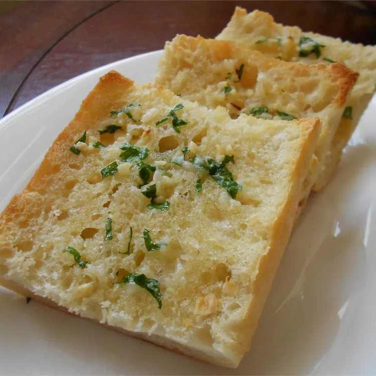

Roasted Garlic Bread

Garlic bread consists of bread, topped with garlic and occasionally olive oil or butter and may include additional herbs, such as oregano or chives.
It is then either grilled until toasted or baked in a conventional or bread oven.
Ingredients
- Garlic: 3 Heads
- Olive Oil: 2 Tablespoons
- Italian Bread: 1 pound loaf
- Butter: 1 cup, softened
- Parmesan Cheese: 1 cup, grated
- Fresh Parsley: 1 tablespoon, chopped
Steps
- Step 1: Preheat the oven to 350 degrees F (175 degrees C).
- Step 2: Slice the tops off of garlic heads, so the tip of each clove is exposed. Place garlic heads, cut-sides up, on a baking sheet; drizzle tops with olive oil.
- Step 3: Bake in the preheated oven until garlic is soft, about 30 minutes.
- Step 4: Set the oven to broil.
- Step 5: Slice bread loaf in half horizontally; place cut-side up on a baking sheet.
- Step 6: Squeeze garlic cloves from their skins into a medium bowl. Stir in butter, Parmesan cheese, and parsley until well blended. Spread onto the cut sides of bread.
- Step 7: Broil bread until toasted, about 5 minutes.